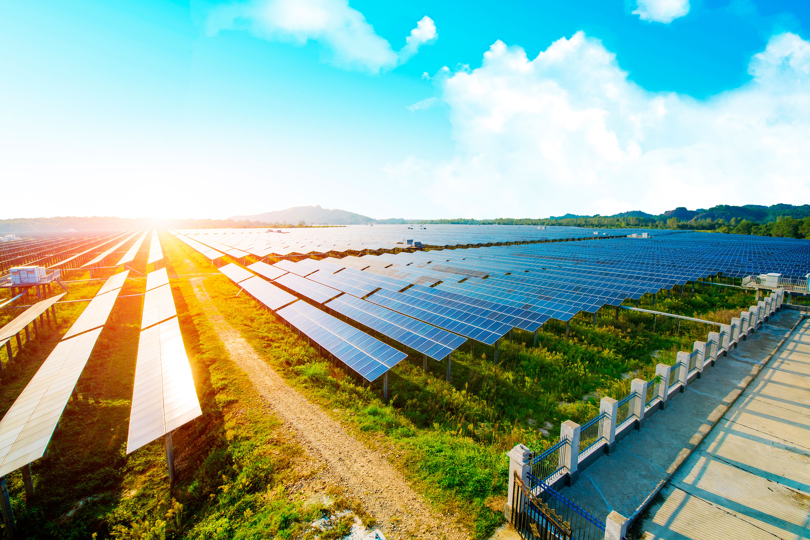

El impacto de la ciencia y la tecnología en la sociedad es profundo y multifacético, afectando todos los aspectos de la vida humana, desde la economía y la cultura hasta la política y el medio ambiente. Estos avances han permitido mejorar la calidad de vida, aumentar la esperanza de vida, reducir la pobreza y facilitar el acceso a la información y la educación.
En el ámbito económico, la ciencia y la tecnología han impulsado la productividad, la creación de nuevas industrias y la globalización de los mercados. Las innovaciones tecnológicas permiten optimizar procesos productivos, desarrollar productos más eficientes y generar empleo en sectores especializados. Sin embargo, también han contribuido a la concentración de riqueza y a la brecha digital entre países y regiones.
Socialmente, la tecnología ha modificado la forma en que las personas interactúan, comunicándose de manera instantánea a través de redes sociales, plataformas digitales y dispositivos móviles. Esto ha generado nuevas dinámicas culturales, formas de activismo y acceso a contenidos educativos y recreativos, aunque también ha planteado retos como la desinformación, la adicción digital y la pérdida de privacidad.
En la salud, los avances científicos han sido cruciales para el control de enfermedades, la medicina preventiva y el desarrollo de vacunas y tratamientos innovadores. La tecnología médica ha permitido cirugías menos invasivas, telemedicina y un mejor seguimiento de pacientes, beneficiando especialmente a comunidades remotas o vulnerables.
La educación también ha sido transformada por la tecnología, con el auge de plataformas virtuales, recursos digitales y metodologías interactivas que facilitan el aprendizaje personalizado y accesible a una población global. Sin embargo, es necesario garantizar la inclusión y capacitación para evitar exclusiones sociales.
En el ámbito ambiental, la ciencia ha demostrado los impactos negativos de ciertas actividades humanas, impulsando políticas y tecnologías orientadas a la conservación, el uso sostenible de recursos y la mitigación del cambio climático. La colaboración internacional y la innovación son esenciales para enfrentar estos desafíos globales.
Por último, la ciencia y la tecnología también influyen en la política y la ética, planteando preguntas sobre derechos digitales, bioética, responsabilidad social y la regulación de nuevas tecnologías. La participación ciudadana y el debate informado son fundamentales para asegurar que el progreso científico y tecnológico sirva al bien común y respete los valores humanos.
En resumen, el impacto de la ciencia y la tecnología en la sociedad es una realidad compleja que combina beneficios, retos y responsabilidades, invitándonos a construir un futuro más justo, inclusivo y sostenible.